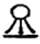

人名
一画
一（88）
二画
二（88） 丁（88） 卜（88） 八（88） 人（88） 儿（88） 九（88）
又（88） 力（89）
三画
三（89） 干（89） 于（89） 士（89） 土（89） 大（89） 万（89）
与（89） 上（89） 山（89） 川（90） 凡（90） 久（90） 丸（90）
广（90） 门（90） 之（90） 尸（90） 卫（90） 小（90） 习（90）
马（90） 子（91）
四画
丰（91） 王（91） 开（94） 井（94） 天（94） 元（94） 无（95）
韦（95） 云（95） 木（95） 丏（95） 不（95） 太（95） 友（95）
尤（95） 车（95） 巨（95） 扎（95） 戈（95） 区（96） 比（96）
瓦（96） 少（96） 中（96） 内（96） 冈（96） 贝（96） 牛（97）
毛（97） 升（97） 长（97） 什（97） 片（97） 仇（97） 介（97）
从（97） 今（97） 公（97） 仓（97） 丹（97） 风（97） 乌（97）
勾（98） 卞（98） 文（98） 方（98） 计（98） 心（98） 尹（98）
巴（98） 邓（98） 毋（99） 水（99） 孔（99）
五画
玉（99） 未（99） 正（99） 甘（99） 艾（99） 节（100） 古（100）
本（100） 术（100） 札（100） 可（100） 丙（100） 左（100） 丕（100）
石（100） 布（100） 龙（101） 平（101） 东（101） 卡（101） 北（101）
卢（101） 归（101） 目（101） 叶（101） 申（102） 田（102） 史（103）
央（103） 冉（103） 出（103） 生（103） 矢（103） 丘（103） 代（103）
白（103） 外（103） 冬（103） 务（103） 包（103） 乐（103） 主（103）
市（103） 邝（103） 立（103） 玄（104） 兰（104） 汉（104） 它（104）
冯（104） 写（104） 永（105） 司（105） 尼（105） 弗（105） 弘（105）
加（105） 皮（106） 发（106） 圣（106） 台（106） 矛（106）
六画
丢（106） 邢（106） 式（106） 戎（106） 耳（106） 吉（106） 老（106）
考（106） 亚（106） 芝（107） 西（107） 协（107） 有（107） 百（107）
达（107） 列（107） 迈（107） 成（107） 托（108） 执（108） 扬（108）
毕（108） 至（108） 师（108） 光（108） 曲（108） 吕（108） 岂（109）
刚（109） 朱（109） 竹（110） 乔（110） 伟（110） 休（110） 伍（110）
伏（110） 伐（110） 仲（110） 任（111） 伦（111） 华（111）  （111）
（111）
伊（111） 向（111） 后（112） 合（112） 旭（112） 名（112） 邬（112）
多（112） 庄（112） 刘（112） 齐（114） 亦（114） 亥（114） 羊（114）
关（114） 米（114） 江（115） 池（115） 汤（115） 宇（115） 守（115）
安（115） 冰（116） 祁（116） 许（116） 寻（117） 那（117） 阮（117）
阳（117） 阴（117） 如（117） 观（117） 羽（117） 纣（118） 约（118）
纪（118） 孙（118）
七画
寿（119） 玛（119） 麦（119） 戒（119） 赤（119） 坂（119） 志（119）
芙（119） 芸（119） 芘（119） 芮（119） 花（119） 芥（119） 芳（119）
严（119） 劳（120） 克（120） 苏（120） 杜（121） 村（121） 杉（121）
巫（121） 杨（121） 李（122） 束（126） 吾（126） 丽（126） 来（126）
连（126） 求（126） 坚（126） 里（126） 吴（126） 时（127） 员（127）
别（127） 利（127） 秀（127） 我（127） 邱（127） 何（128） 佐（128）
但（128） 伯（128） 伶（128） 佛（129） 伽（129） 余（129） 希（129）
谷（129） 孚（129） 龟（129） 鸠（129） 狄（129） 岛（129） 邹（129）
亨（130） 库（130） 应（130） 庐（130） 辛（130） 怀（130） 闲（130）
兑（130） 汪（130） 沄（130） 沛（131） 沙（131） 沃（131） 沈（131）
宋（132） 冶（132） 良（132） 诃（132） 启（132） 评（132） 君（132）
尾（132） 张（132） 陆（135） 阿（136） 陈（136） 陀（139） 妙（139）
邵（139） 邰（140） 纳（140）
八画
武（140） 青（140） 耶（140） 坪（140） 其（140） 茂（140） 英（140）
苟（140） 范（140） 茀（141） 茅（141） 林（141） 枚（142） 板（142）
松（142） 杭（142） 杰（142） 画（143） 雨（143） 郁（143） 奈（143）
拔（143） 抱（143） 拉（143） 招（143） 臤（143） 欧（143） 叔（143）
卓（144） 尚（144） 果（144） 国（144） 昇（144） 明（144） 易（144）
迪（144） 岩（144） 罗（144） 帕（145） 凯（145） 迭（145） 昋（145）
和（145） 季（146） 竺（146） 侍（146） 岳（146） 佩（146） 帛（146）
彼（146） 所（146） 金（146） 郄（146） 朋（146） 胁（147） 周（147）
服（148） 忽（148） 庚（148） 废（148） 育（148） 郑（148） 单（149）
浅（149） 法（149） 河（149） 泡（149） 波（149） 泽（150） 宗（150）
实（150） 空（150） 宓（150） 郎（150） 诗（150） 房（150） 祈（150）
该（150） 建（150） 居（150） 屈（150） 弥（150） 妹（150） 妲（150）
迦（150） 贯（150） 孟（150） 练（151） 细（151） 织（151） 孤（151）
终（151） 驺（151） 经（151）
九画
契（151） 春（151） 珂（151） 封（151） 项（151） 赵（151） 郝（152）
荆（152） 革（152） 草（152） 荀（152） 荒（152） 茫（152） 胡（152）
南（153） 柯（154） 查（154） 柏（154） 柳（154） 勃（154） 郦（155）
耐（155） 厘（155） 威（155） 轲（155） 鸥（155） 显（155） 冒（155）
星（155） 贵（155） 思（155） 品（155） 哈（155） 钝（155） 钟（155）
钢（156） 拜（156） 秋（156） 科（156） 重（156） 段（156） 俅（156）
修（156） 保（156） 皇（156） 禹（156） 侯（156） 衍（156） 须（156）
俞（157） 狭（157） 独（157） 昝（157） 饶（157） 盈（157） 亭（157）
哀（157） 度（157） 施（157） 迹（158） 彦（158） 恺（158） 恰（158）
恽（158） 炯（158） 美（158） 姜（158） 娄（158） 前（158） 洪（158）
洙（158） 活（158） 洛（158） 济（158） 浑（158） 津（158） 宣（158）
宥（158） 室（158） 宫（158） 客（159） 祖（159） 神（159） 祝（159）
祢（159） 费（159） 眉（159） 姚（159） 贺（159） 姨（159） 柔（159）
骆（159） 幽（159）
十画
耕（160） 秦（160） 泰（160） 班（160） 素（160） 耿（160） 聂（160）
起（160） 盐（160） 袁（160） 都（161） 埃（161） 莱（161） 莫（161）
莪（161） 荷（161） 晋（161） 莎（161） 桂（161） 桔（161） 桓（161）
格（161） 索（162） 哥（162） 栗（162） 贾（162） 速（162） 配（162）
夏（162） 原（162） 烈（163） 顾（163） 顿（163） 振（163） 致（163）
柴（163） 党（163） 晓（163） 晁（163） 晏（163） 恩（163） 唆（163）
峰（163） 圆（163） 特（163） 钱（163） 铁（164） 铃（164） 倭（164）
倪（164） 倍（164） 息（164） 射（164） 徐（164） 殷（166） 般（166）
拿（166） 爱（166） 翁（166） 胶（166） 桀（166） 留（166） 高（166）
郭（167） 席（168） 斋（168） 唐（167） 悄（168） 凌（168） 料（168）
兼（168） 涅（168） 浩（168） 海（168） 浮（169） 流（169） 宴（169）
宾（169） 容（169） 朗（169） 诸（169） 诺（169） 冢（169） 调（169）
谈（169） 弱（169） 展（169） 陶（169） 桑（169） 绢（169） 绥（169）
继（170）
十一画
理（170） 培（170） 堀（170） 基（170） 勒（170） 黄（170） 菲（171）
菊（171） 菅（171） 萧（171） 萨（172） 梦（172） 梵（172） 梅（172）
梓（172） 梭（172） 曹（173） 龚（173） 盛（173） 雩（173） 雪（173）
捷（174） 接（174） 虚（174） 常（174） 野（174） 勖（174） 朂（174）
曼（174） 略（174） 鄂（174） 崔（174） 崇（174） 铢（174） 铭（174）
笛（174） 符（174） 笠（174） 第（174） 逸（174） 猛（174） 麻（175）
庾（175） 康（175） 鹿（175） 章（175） 商（176） 望（176） 阎（176）
盖（176） 盗（176） 清（176） 淑（176） 淮（176） 淦（176） 渔（176）
淡（176） 深（176） 梁（176） 婆（177） 涵（177） 寅（177） 寇（177）
宿（177） 密（177） 尉（177） 屠（177） 隋（177） 维（177） 巢（177）
十二画
琪（177） 琵（177） 琴（177） 琼（177） 斯（177） 塔（178） 越（178）
喜（178） 堺（178） 彭（178） 散（178） 葛（178） 董（178） 敬（178）
蒋（178） 落（179） 韩（179） 辜（179） 棱（179） 森（179） 惠（180）
覃（180） 厨（180） 奡（180） 确（180） 提（180） 雅（180） 紫（180）
斐（180） 遏（180） 跋（180） 景（180） 喀（180） 黑（180） 嵇（180）
程（180） 黍（181） 傅（181） 焦（181） 储（181） 奥（178） 舒（181）
释（181） 禽（181） 腓（181） 鲁（181） 童（182） 阑（182） 普（182）
道（182） 曾（182） 湘（182） 温（182） 渡（182） 游（182） 寒（182）
富（182） 谟（182） 谢（182） 弼（183） 强（183） 登（183） 骚（183）
缇（183）
十三画
塚（183） 蓝（183） 蒯（183） 蓬（183） 蒲（183） 蒙（183） 楚（183）
楷（183） 槐（183） 楼（183） 赖（183） 甄（184） 雷（184） 裘（184）
虞（184） 路（184） 蜗（184） 蜀（184） 锡（184） 微（184） 詹（184）
鲍（184） 新（184） 慎（184） 慈（184） 溥（184） 源（184） 滨（184）
塞（184） 窦（185） 窠（185） 福（185） 褚（185）
十四画
静（185） 嘉（185） 赫（185） 綦（185） 蔡（185） 蔺（186） 蔼（186）
槙（186） 樋（186） 歌（186） 臧（186） 霁（186） 辕（186） 裴（186）
鹖（186） 管（186） 僧（186） 疑（186） 豪（186） 廖（186） 端（186）
漆（187） 漱（187） 赛（187） 谭（187） 谯（187） 熊（187） 翟（187）
缪（187）
十五画
璇（187） 增（187） 蕴（187） 横（187） 樊（187） 磊（188） 墨（188）
 （188） 箭（188） 黎（188） 德（188） 摩（188） 褒（188） 颜（188）
（188） 箭（188） 黎（188） 德（188） 摩（188） 褒（188） 颜（188）
澎（189） 潘（189） 禤（189） 鹤（189）
十六画
璞（189） 燕（189） 薛（189） 蕗（189） 薄（189） 霍（189） 冀（190）
穆（190） 澹（190） 濂（190）
十七画
戴（190） 藉（190） 藏（190） 霞（190） 魏（190） 蹇（191）
十八画
藤（191） 瞿（191） 嚣（191） 馥（191） 簠（191） 彝（191）
十九画以上
籁（191） 灌（191） 耀（191） 鬻（191）
其他

（192）神话传说和各类作品中人名
二画
七（192）
三画
三（192） 土（192） 大（192） 女（192） 小（192） 马（192）
四画
王（192） 无（192） 木（192） 五（192） 不（192） 太（192） 扎（192）
贝（192） 牛（192） 毛（192） 长（192） 公（193） 仓（193） 丹（193）
乌（193） 文（193） 方（193） 火（193） 巴（193） 水（193）
五画
东（193） 卡（193） 卢（193） 目（193） 田（193） 丘（193） 玄（193）
司（193） 尼（193）
六画
刑（193） 吉（193） 老（193） 地（193） 共（193） 亚（193） 有（193）
列（193） 死（193） 尧（193） 因（193） 朱（193） 伏（193） 伊（193）
刘（193） 孙（193）
七画
李（193） 轩（193） 岐（193） 闰（193） 灶（193） 沙（193） 社（193）
张（193） 阿（194）
八画
拉（194） 凯（194） 彼（194） 金（194） 舍（194） 净（194） 泼（194）
弥（194）
九画
城（194） 赵（194） 柯（194） 勃（194） 威（194） 挪（194） 禺（194）
钟（194） 帝（194） 神（194） 羿（194）
十画
夏（194） 蚩（194） 皋（194） 逢（194） 郭（194） 浮（194） 诺（194）
陶（194） 绥（194）
十一画
黄（194） 梅（195） 梓（195） 堂（195） 盘（195） 麻（195） 康（195）
阎（195） 维（195）
十二画
彭（195） 葛（195） 焦（195） 貂（195） 舜（195） 普（195） 湘（195）
十三画
嫫（195）
十四画
榜（195） 僦（195） 瘟（195） 赛（195） 察（195） 嫦（195）
十五画
蕊（195） 颛（195） 稷（195） 鲧（195） 摩（195） 潘（195）
十六画以上
穆（195） 燧（195） 羲（195） 瞽（196）
外文人名
西文
A（196） B（196） C（197） D（197） E（197） F（198） G（198）
H（198） I（199） J（199） K（199） L（200） M（200） N（201）
O（201） P（201） R（201） S（202） T（202） U（203） V（203）
W（203） Y（203） Z（204）
俄文
К（204）
日文
ア（204） イ（204） エ（204） カ（204） キ（204） コ（204） シ（204）
ス（204） ソ（204） ト（204） ノ（204） ハ（204） ヒ（204） メ（204）
ラ（204） レ（204）